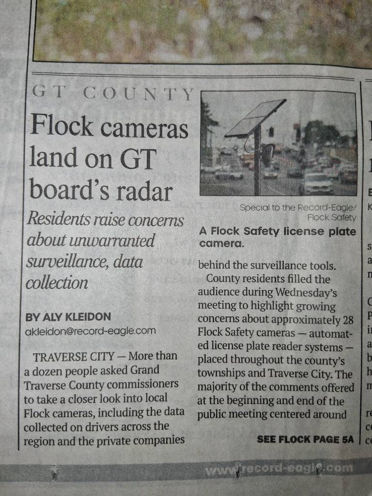
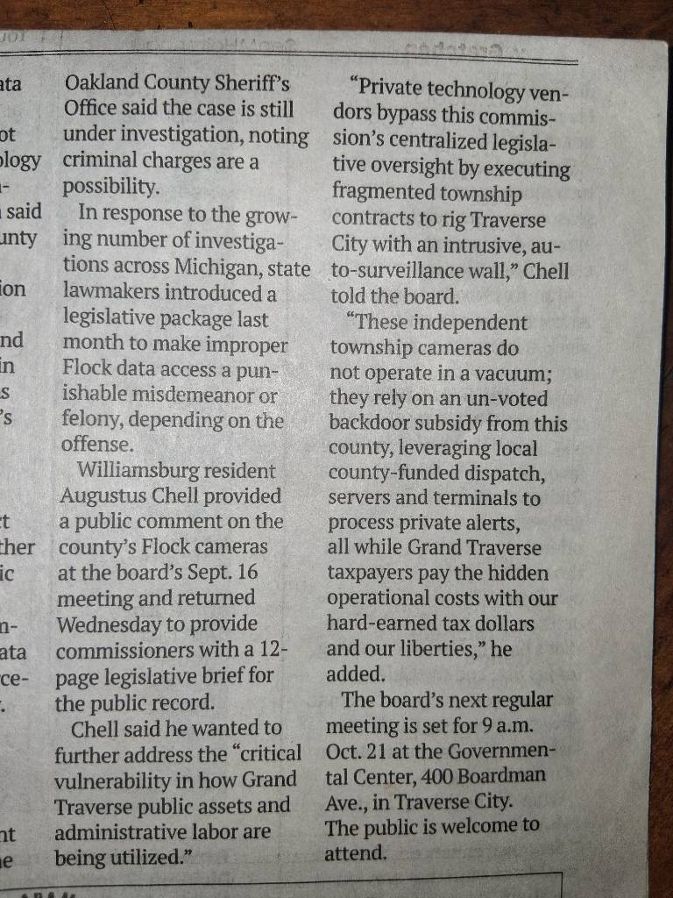

"Liberty and Union, now and forever, one and inseparable." — Regional Public Oversight
The AMC Liberty & Union Alliance is established as a non-partisan, independent forum for jurisdictional oversight, public record preservation, and constitutional education [image_Aw0w8M.png].
Our mission rests upon a singular, foundational truth: Our fundamental human rights do not originate from ink on parchment. They are inherent, natural, and born within us [image_Aw0w8M.png]. The supreme compacts of our history—the Declaration of Independence, the United States Constitution, and the Bill of Rights—do not grant us liberty [image_Aw0w8M.png]. Instead, they serve as defensive barriers, engineered to safeguard our natural-born rights against centralized overreach [image_Aw0w8M.png].
However, paper boundaries are inherently fragile [image_Aw0w8M.png]. They possess no automatic enforcement mechanisms [image_Aw0w8M.png]. They remain holding lines only so long as the Sovereign People actively hold, defend, and enforce the original intent of those texts [image_Aw0w8M.png]. To lose sight of this intent is to lose liberty itself [image_Aw0w8M.png]. It is our solemn civic duty to stand as the living guardians of our heritage [image_Aw0w8M.png].
To fulfill this obligation, the Alliance operates across three distinct operational tracks:
National analysis and constitutional briefings are hosted live on our official channel repository [image_ncq_h9.png].
This module anchors your live updates. Click below to enter the channel to view active streams, legislative tracking breakdowns, and town hall records.
Reviewing macro-level legislation—including Section 219 of the National Defense Authorization Act (NDAA)—to track foreign procurement actions and economic interventions that compromise sovereign national interests [image_ncq_h9.png].
Access primary foundational source documentation preserved within our secure repository:
Review the specific technical briefs, public logs, and local dossiers filed across regional county seats:
Grand Traverse County — Tracking surveillance parameters and infrastructure defunding under MCL 46.11(l).
📋 Anti-Flock Brief (9-16-26) 📋 Anti-Flock Brief (10-7-26) 🗣️ Anti-Flock Public Speech 📁 Public Handout Packet

Antrim County — Dismantling segmented procurement networks and budget oversight under MCL 46.11(m).
📋 Anti-Flock Brief (10-1-26) 🗣️ Anti-Flock Public Speech 📁 Public Handout Packet